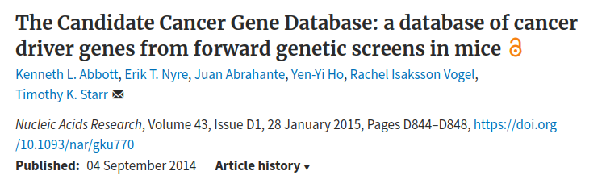
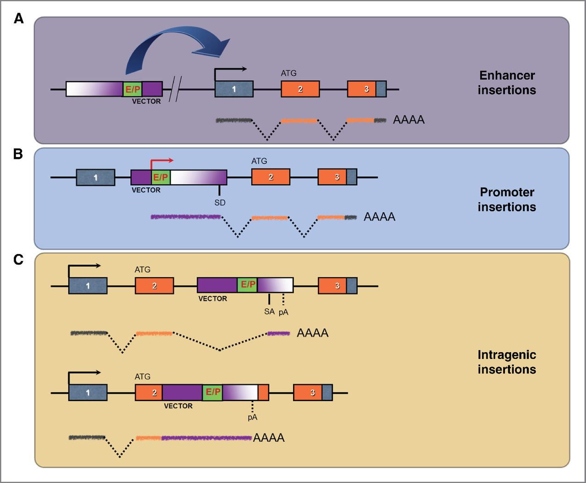
Ranzani, Marco, et al. “Cancer Gene Discovery: Exploiting Insertional Mutagenesis.” Mol Cancer Res, vol. 11, no. 10, 2013, pp. 1141–1158., doi:10.1158/1541-7786.MCR-13-0244.
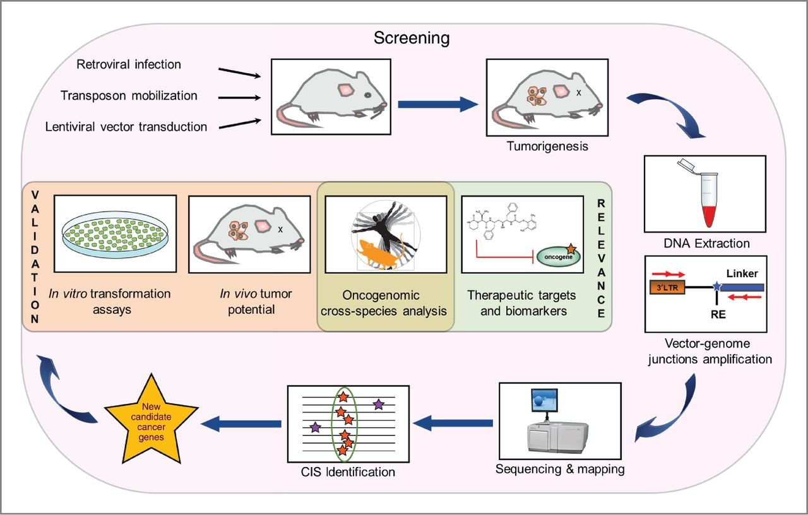
Ranzani, Marco, et al. “Cancer Gene Discovery: Exploiting Insertional Mutagenesis.” Mol Cancer Res, vol. 11, no. 10, 2013, pp. 1141–1158., doi:10.1158/1541-7786.MCR-13-0244.
To facilitate analysis of driver genes to catalog all common insertion sites (CISs) and their corresponding genes identified in published studies using transposon insertional mutagenesis.
ETL Process
scrape data → homology association → integrate into table
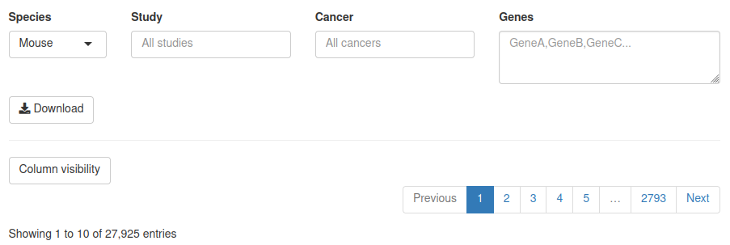
Primary Challenges
Secondary Challenges
Primary Challenges
Secondary Challenges
| Feature | Goal | Framework | Description | |
|---|---|---|---|---|
| 1 | server OS | upgrade server OS | RHEL7 | Transition of architecture for public server host. This is required by University OIT due to end-of-life schedule for RHEL6. |
| 2 | web front-end | rewrite web interface | Rmarkdown | Improvements to the web interface written in a modern, simplified language. This improved access to content creation and allowed for automation in front-end rendering. |
| 3 | table build | rewrite table build | Rshiny | Rshiny offered a dramatic improvement to replace the existing process by merging the table build back-end with a modern web display of the app interface. |
| 4 | content update | improved admin controls | BASH/R | Old app version confined some content controls to app author, limiting ability to make contributions by product owner. |
| 5 | version control | implement best practices | git/docs | No version control was used in the original development of the app. This and other documentation practices were expanded in the rewrite. |
| 6 | multiple | resource improvements | codebase | Due to the lack of some best practices, there were many opportunities to make impactful resource improvements. |
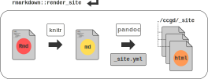
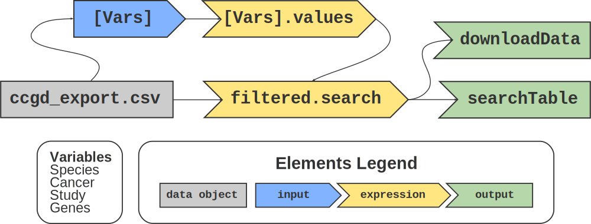
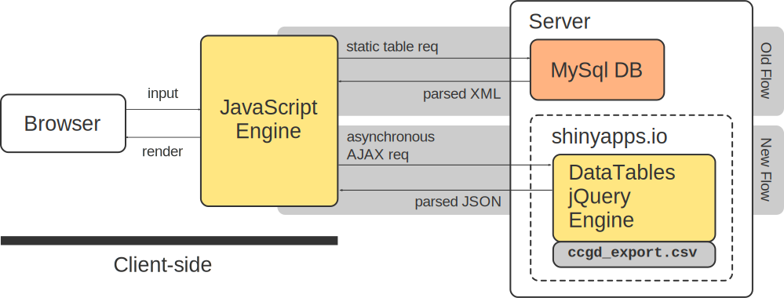
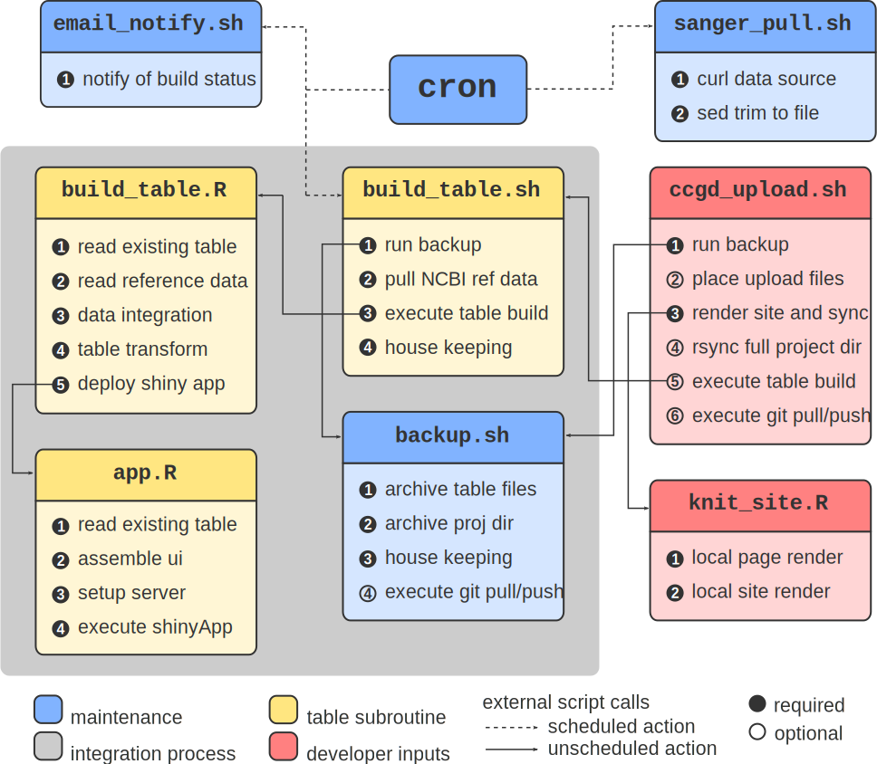
df <- read.csv("ccgd_export.csv") # read in base source file
speciesList <- c("Mouse", "Human", "Rat", "Fly", "Fish", "Yeast")
# inputs are arranged in column, width orientation
# each column variable set represents a single input and its params
# next row of inputs layout
ui <- fluidPage( # build shiny app UI
fluidRow(
column(
2,
selectizeInput("Species",
label = "Species",
choices = speciesList
)
),
column(
3,
selectizeInput("Study",
label = "Study",
choices = sort(unique(df$Study)),
selected = NULL,
multiple = TRUE,
options = list(placeholder = "All studies")
)
),
column(
3,
selectizeInput("Cancer",
label = "Cancer",
choices = sort(unique(df$Cancer)),
selected = NULL,
multiple = TRUE,
options = list(placeholder = "All cancers")
)
),
column(
4,
textAreaInput("Genes",
label = "Genes",
placeholder = "GeneA,GeneB,GeneC..."
)
)
),
fluidRow(
column(
2,
# button for table export
downloadButton("downloadData",
label = "Download"
)
)
),
hr(),
dataTableOutput("searchTable")
)---
title: "Candidate Cancer Gene Database"
bibliography: refs/ccgd_paper.bib
nocite: '@*'
output:
html_document:
includes:
in_header: "styles/favicon.html"
after_body: "styles/footer.html"
css: styles/styles.css
theme: readable
---
The Candidate Cancer Gene Database (CCGD) was developed to make accessible a collated set of results from transposon-based forward cancer genetic screens in mice. The value in doing this is to give investigators the ability to quickly filter through the results of many such screens in an effort to determine the candidacy of a gene for its role in cancer.
***
### Background
This work is a product of the [Starr Lab](http://www.med.umn.edu/starrlab/) at the [University of Minnesota](http://www.umn.edu/). The Starr Lab is affiliated with the [Center for Genome Engineering](http://www.cge.umn.edu/), the [Masonic Cancer Center](http://www.cancer.umn.edu/), the Department of [OB/GYN](http://www.obgyn.umn.edu/), and the Department of [Genetics, Cell Biology, and Development](http://www.cbs.umn.edu/gcd/).
##### Contributions
The idea for creating this database originated from Tim Starr, Vincent Keng, and David Largaespada at UMN. Erik Nyre and Ken Abbott developed the original database, with help from Juan Abrahante. A complete website and backend overhaul was conducted by Christopher Tastad in 2019.
* Ken Abbott
* [Erik Nyre](https://www.dorsey.com/people/n/nyre-erik)
* [Juan Abrahante](https://research.umn.edu/units/umii/about-us/staff-directory/juan-e-abrahante-phd)
* [Christopher Tastad](https://github.com/ctastad)
***
##### Updates
The most recent table build was completed on:
<object type="text/html"
height=40px
data="build_date.txt"></object>---
title: "Candidate Cancer Gene Database"
bibliography: refs/ccgd_paper.bib
nocite: '@*'
output:
html_document:
includes:
in_header: "styles/favicon.html"
after_body: "styles/footer.html"
css: styles/styles.css
theme: readable
---
The Candidate Cancer Gene Database (CCGD) was developed to make accessible a collated set of results from transposon-based forward cancer genetic screens in mice. The value in doing this is to give investigators the ability to quickly filter through the results of many such screens in an effort to determine the candidacy of a gene for its role in cancer.
***
### Background
This work is a product of the [Starr Lab](http://www.med.umn.edu/starrlab/) at the [University of Minnesota](http://www.umn.edu/). The Starr Lab is affiliated with the [Center for Genome Engineering](http://www.cge.umn.edu/), the [Masonic Cancer Center](http://www.cancer.umn.edu/), the Department of [OB/GYN](http://www.obgyn.umn.edu/), and the Department of [Genetics, Cell Biology, and Development](http://www.cbs.umn.edu/gcd/).
##### Contributions
The idea for creating this database originated from Tim Starr, Vincent Keng, and David Largaespada at UMN. Erik Nyre and Ken Abbott developed the original database, with help from Juan Abrahante. A complete website and backend overhaul was conducted by Christopher Tastad in 2019.
* Ken Abbott
* [Erik Nyre](https://www.dorsey.com/people/n/nyre-erik)
* [Juan Abrahante](https://research.umn.edu/units/umii/about-us/staff-directory/juan-e-abrahante-phd)
* [Christopher Tastad](https://github.com/ctastad)
***
##### Updates
The most recent table build was completed on:
<object type="text/html"
height=40px
data="build_date.txt"></object>setwd("..")
# render core webpages
rmarkdown::render("index.Rmd")
rmarkdown::render("search.Rmd")
rmarkdown::render("help.Rmd")
rmarkdown::render("references.Rmd")
rmarkdown::render("contact.Rmd")
rmarkdown::render_site("index.Rmd")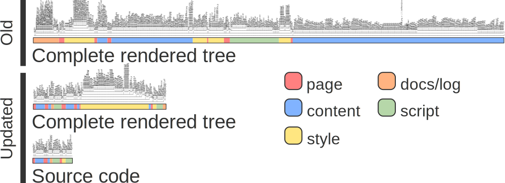
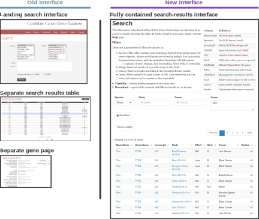
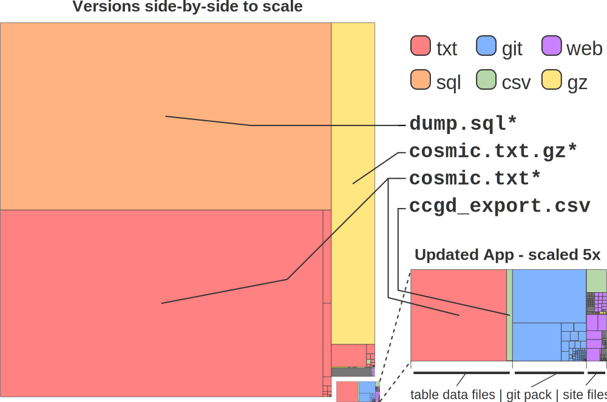
# Executed: locally from the CCGD project dir
# Options: -b build (TRUE,FALSE) -s full proj dir sync (TRUE,FALSE)
# -t table upload file -r reference upload file
# -k (TURE,FALSE) render site files
# pass arguments from cli
while getopts b:t:r:s: option
do
case "${option}"
in
b) build=${OPTARG};;
t) table=${OPTARG};;
r) refs=${OPTARG};;
s) sync=${OPTARG};;
esac
done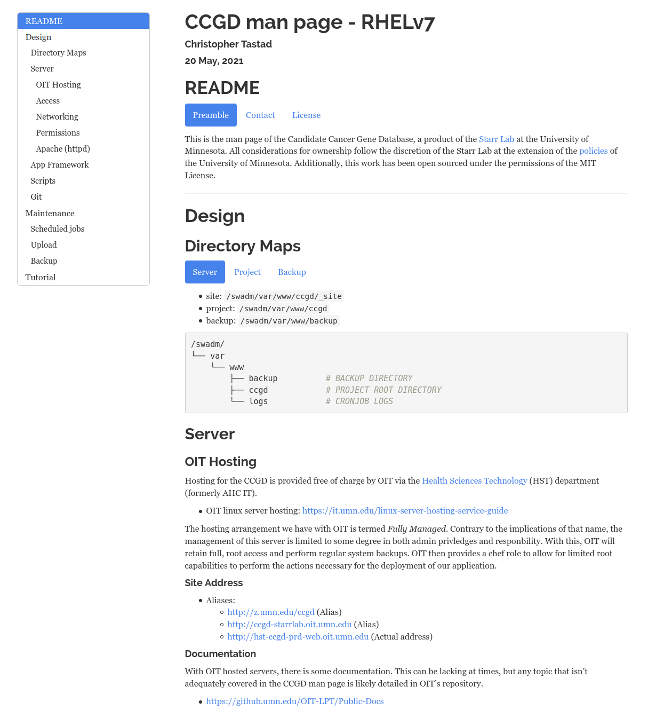
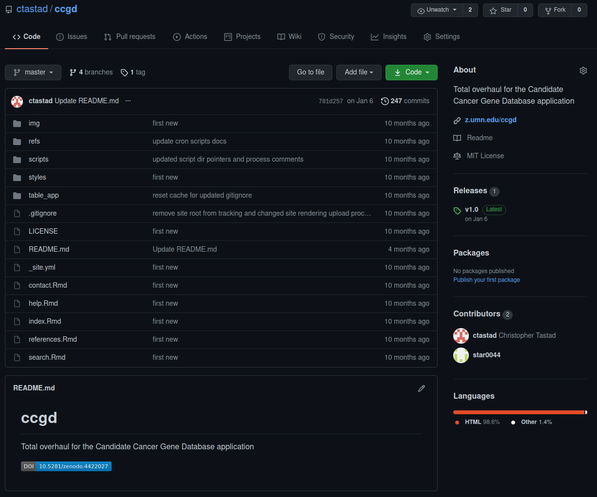
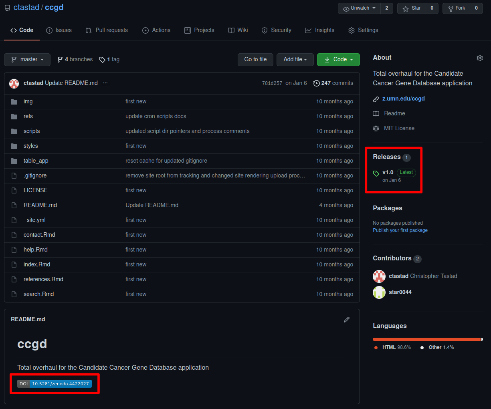